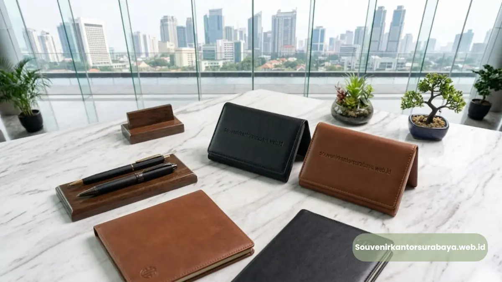

- Warna Apa yang Cocok untuk Dompet Kartu Nama Kulit Korporat?
- Bagaimana Desain Logo yang Elegan pada Souvenir Kulit?
- Apa Saja Variasi Desain yang Bisa Disesuaikan dengan Identitas Brand?
- Bagaimana Memilih Jenis Jahitan dan Finishing yang Elegan?
- Bagaimana Menyesuaikan Desain dengan Karakter Mitra Bisnis yang Dituju?
Dompet kartu nama kulit yang elegan untuk mitra bisnis umumnya mengutamakan warna netral, logo minimalis, dan detail finishing rapi agar tetap terlihat profesional tanpa kesan berlebihan.
Pemilihan desain yang tepat membantu souvenir korporat terasa personal sekaligus merepresentasikan identitas perusahaan secara halus.
- Warna netral seperti hitam, coklat tua, dan navy paling umum untuk kesan korporat
- Logo minimalis dengan teknik emboss memberi kesan elegan dan tidak berlebihan
- Variasi desain dapat disesuaikan dengan identitas visual masing-masing perusahaan
- Detail finishing memengaruhi kesan keseluruhan produk saat diterima mitra bisnis
- Souvenir Kantor Surabaya membantu mewujudkan desain custom sesuai kebutuhan brand Anda
Warna Apa yang Cocok untuk Dompet Kartu Nama Kulit Korporat?
Warna yang paling cocok untuk dompet kartu nama kulit korporat adalah warna netral seperti hitam, coklat tua, dan navy, karena warna-warna ini secara konsisten diasosiasikan dengan kesan formal dan profesional di berbagai jenis industri.
Hitam sering dipilih perusahaan di sektor perbankan, hukum, dan konsultasi karena memberi kesan tegas dan elegan.
Coklat tua atau tan cocok untuk perusahaan yang ingin menampilkan kesan hangat namun tetap profesional, misalnya di sektor kreatif atau konsultan bisnis.
Sementara navy sering menjadi pilihan tengah yang terlihat formal namun tidak sekaku hitam.
Selain warna dasar, kombinasi jahitan dengan warna kontras tipis, misalnya benang krem pada dasar kulit hitam, dapat menambah detail visual tanpa mengurangi kesan elegan secara keseluruhan.

Bagaimana Desain Logo yang Elegan pada Souvenir Kulit?
Desain logo yang elegan pada souvenir kulit umumnya berukuran proporsional, diletakkan pada posisi yang konsisten, dan menggunakan teknik cetak yang menyatu dengan permukaan kulit, bukan sekadar ditempel di atasnya.
Teknik emboss polos sering menjadi pilihan utama karena menghasilkan logo timbul tanpa warna tambahan, sehingga kesan yang muncul lebih halus dan tidak terlalu mencolok.
Untuk perusahaan yang ingin tampilan lebih menonjol, hot stamping dengan warna emas atau silver dapat menjadi alternatif yang tetap terlihat elegan selama ukurannya tetap proporsional terhadap ukuran dompet.
Posisi logo yang umum digunakan adalah di bagian depan bawah atau di sudut produk, sehingga tetap terlihat jelas saat dompet dibuka namun tidak mendominasi seluruh permukaan kulit.
Apa Saja Variasi Desain yang Bisa Disesuaikan dengan Identitas Brand?
Variasi desain dompet kartu nama kulit yang dapat disesuaikan dengan identitas brand meliputi pilihan warna dasar, teknik cetak logo, jenis jahitan, serta tambahan elemen seperti nama perusahaan atau tagline singkat.
Perusahaan dengan identitas visual yang sudah kuat dapat mereplikasi warna brand pada bagian dalam dompet, sementara bagian luar tetap menggunakan warna netral agar tetap sesuai dengan kesan korporat secara umum.
Penambahan nama perusahaan dengan font yang senada dengan identitas brand juga dapat memperkuat pengenalan visual saat souvenir digunakan oleh mitra bisnis.
Baca Juga
Untuk perusahaan yang ingin tampil lebih personal, penambahan inisial penerima di samping logo perusahaan juga menjadi variasi yang semakin banyak diminati, karena memberi kesan bahwa souvenir tersebut dipersiapkan secara khusus, bukan sekadar barang massal.
Bagaimana Memilih Jenis Jahitan dan Finishing yang Elegan?
Jenis jahitan dan finishing yang elegan pada dompet kartu nama kulit umumnya ditandai dengan jahitan rapat dan rapi, serta tepi kulit yang dilapisi secara halus agar tidak terlihat kasar atau mudah mengelupas.
Jahitan dengan jarak yang konsisten dan warna benang yang senada dengan warna dasar kulit cenderung memberi kesan lebih formal, cocok untuk souvenir eksekutif.
Sebaliknya, jahitan dengan warna kontras yang lebih tegas dapat menjadi pilihan untuk perusahaan yang ingin menghadirkan sentuhan modern tanpa menghilangkan kesan profesional.
Pada bagian finishing tepi, teknik edge painting yang rapi membuat permukaan kulit terlihat lebih solid dan halus saat disentuh, dibanding tepi yang dibiarkan tanpa lapisan tambahan.
Detail sekecil ini sering menjadi pembeda antara souvenir yang terlihat premium dan souvenir yang terkesan diproduksi secara asal-asalan.
Bagaimana Menyesuaikan Desain dengan Karakter Mitra Bisnis yang Dituju?
Menyesuaikan desain dompet kartu nama kulit dengan karakter mitra bisnis yang dituju dapat dilakukan dengan mempertimbangkan sektor industri, gaya komunikasi, dan tingkat formalitas relasi bisnis yang telah terjalin.
Untuk mitra bisnis di sektor keuangan atau hukum yang cenderung formal, desain dengan warna gelap, logo minimalis, dan tanpa elemen dekoratif berlebih biasanya lebih sesuai.
Sementara untuk mitra di sektor kreatif atau teknologi, sedikit variasi warna atau kombinasi jahitan kontras dapat memberi kesan lebih dinamis tanpa mengurangi kesan profesional secara keseluruhan.
Tingkat formalitas relasi bisnis juga dapat menjadi pertimbangan. Mitra bisnis yang baru dijalin biasanya lebih cocok diberikan desain standar dengan logo Perusahaan.
Sementara mitra jangka panjang dengan hubungan lebih erat dapat diberikan sentuhan personalisasi tambahan, seperti inisial nama penerima, sebagai bentuk apresiasi khusus.

Hawa Nadira
Tim penulis CorporateGifts ID berfokus pada strategi souvenir kantor, merchandise korporat, dan inovasi brand untuk klien B2B.
Keahlian: Branding perusahaan, produksi souvenir, paket event, desain materi promosi.
Artikel Terkait

Dompet Kartu Nama Kulit untuk Klien Bisnis Surabaya
Souvenir korporat berbahan kulit yang dirancang untuk menyimpan kartu nama secara rapi sekaligus memperkuat citra profesional.
Baca Selengkapnya
Manfaat Dompet Kartu Nama Kulit sebagai Souvenir Korporat
Meningkatkan citra perusahaan melalui hadiah elegan yang sangat fungsional bagi klien Anda.
Baca Selengkapnya
Harga Dompet Kartu Nama Kulit Custom Logo di Surabaya
Harga dompet kulit ditentukan oleh kombinasi bahan kulit, teknik pencetakan logo, desain, dan jumlah pesanan.
Baca Selengkapnya